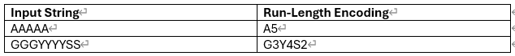

What is Lossless Image Compression?
Huffman Coding
Arithmetic Coding
Lossless Image Compression is a type of image compression that rewrites the algorithm mathematically in a more efficient way. Lossless carries all the image file information which results in the identical appearance of the image quality but in smaller file size. As such, no details will be lost throughout the process, and can be perfectly reconstructed from the compressed data. This makes lossless compression often called the “reversible” compression.
How can Lossless compression reduce the size while maintaining the exact quality? Let’s see how the algorithms do their magic!1. Run-length encoding (RLE) – PCX, BMP, TGA, TIFF
- Substitute the repeating occurrences of characters by that character followed by the number of repetitions. Generating shorter and simpler bits of data.
- However, it may not perform well on too complex images and/or even lead to more bytes if there is not much repetition, for example “abcde” will be transformed to “a1b1c1d1e1”
2. Variable-length coding (Huffman, Arithmetic Coding)
- Principal: encode the lower number of bits for the data with higher frequency of appearance. Therefore, resulting in fewer bits than the original string characters.